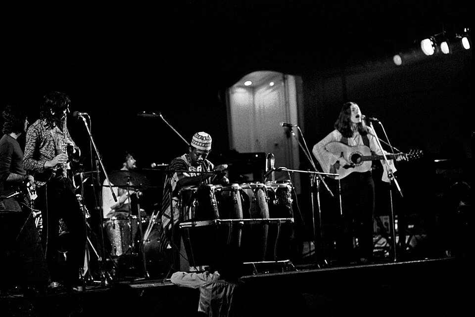

← All bands
Progressive / Folk Rock · Orchestral Rock
Traffic
Formed in Birmingham in 1967 around teenage prodigy Steve Winwood, fresh from the Spencer Davis Group, Traffic blended rock, jazz, folk and psychedelia into a loose, exploratory sound. Known for retreating to a remote countryside cottage to write, the band became a cornerstone of Britain's late-1960s progressive rock scene and a key link between Birmingham's beat-group era and the album-oriented rock that followed.
Lineup
- Steve Winwood — vocals, keyboards, guitar
- Jim Capaldi — drums, vocals
- Chris Wood — saxophone, flute
- Dave Mason — guitar, vocals

Discography & Spotify
Three landmark albums, streamable in full.